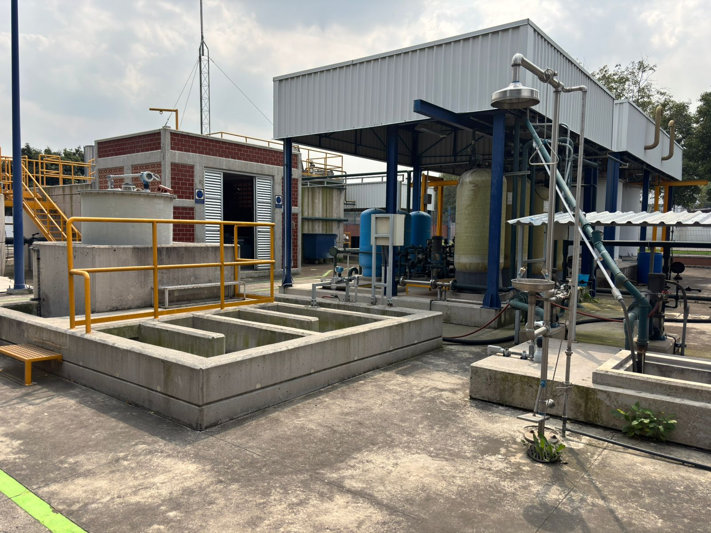

Sustentabilidad y compromiso institucional

La PTAR de la FES Acatlán es mucho más que una obra de ingeniería ambiental: es una expresión tangible del compromiso de la UNAM con la sostenibilidad, la educación ambiental y la innovación tecnológica. Este proyecto se integra a la estrategia de la Universidad Sustentable, contribuyendo directamente a los objetivos institucionales de reducir el impacto ecológico, fomentar el uso eficiente de los recursos naturales y formar una comunidad universitaria consciente y participativa.
Aportes clave al desarrollo sustentable:
- Reaprovechamiento del agua tratada: El agua tratada es utilizada para riego de las áreas verdes de la zona deportiva, disminuyendo la dependencia del agua potable.
- Reducción de emisiones contaminantesAl verter agua tratada al sistema de drenaje se contribuye con mejorar el medio ambiente.
- Gestión circular de residuos,como el tratamiento y reutilización de lodos estabilizados en forma de composta.
- Vinculación con la formación académica:La PTAR sirve como plataforma para prácticas profesionales; residencias profesionales; servicio social; y para el desarrollo de proyectos de investigación.
- Educación ambiental activa:Se brinda educación ambiental al interior de la PTAR mediante visitas guiadas, talleres y actividades con estudiantes y público externo.

Con una visión a largo plazo, la Planta de Tratamiento de Aguas Residuales de la FES Acatlán se posiciona como un modelo de infraestructura sustentable universitaria, en el que la ciencia, la tecnología y el compromiso ambiental convergen para construir un futuro mejor.
Sustentabilidad y Beneficios Ambientales

Desde su puesta en marcha, la Planta de Tratamiento de Aguas Residuales de la FES Acatlán ha generado un impacto positivo significativo tanto en el entorno ecológico; así como en el aprovechamiento y optimización de los recursos hídricos dentro de nuestro campus. Una de sus principales contribuciones es la reducción del uso de agua potable para el riego de áreas verdes. Tan solo en 2019, se reutilizaron más de 5 millones de litros de agua tratada para mantener en óptimas condiciones las áreas verdes de la facultad; es importante mencionar que del 2018 al 2025, se han utilizado más de 18 millones de litros de agua tratada para dicha actividad. Este volumen representa un ahorro económico considerable y una acción directa en favor del uso responsable del recurso hídrico.
Tratar localmente las aguas residuales generadas por la comunidad universitaria.
Se logra una disminución significativa en las descargas a la red municipal.
Contribuyendo así a la preservación del medio ambiente urbano.
Beneficios destacados:
- Reutilización eficiente del agua tratada para riego de áreas verdes de la zona deportiva.
- Ahorro considerable en la utilización de agua potable para riego de las áreas verdes.
- Disminución del impacto ecológico por vertido de aguas contaminadas.
- Contribución directa a los objetivos del Campus Sustentable impulsado por la Coordinación Universitaria para la Sustentabilidad (COUS).
- Beneficios sociales tales como el fomento de la actividad física, reducción del estrés, y la interacción entre la comunidad universitaria.
Con estos resultados, la Planta de Tratamiento de Aguas Residuales de la FES Acatlán no solo cumple una función técnica, sino que se ha convertido en un ejemplo de infraestructura verde al servicio de la educación, el ahorro de recursos y la resiliencia ambiental.